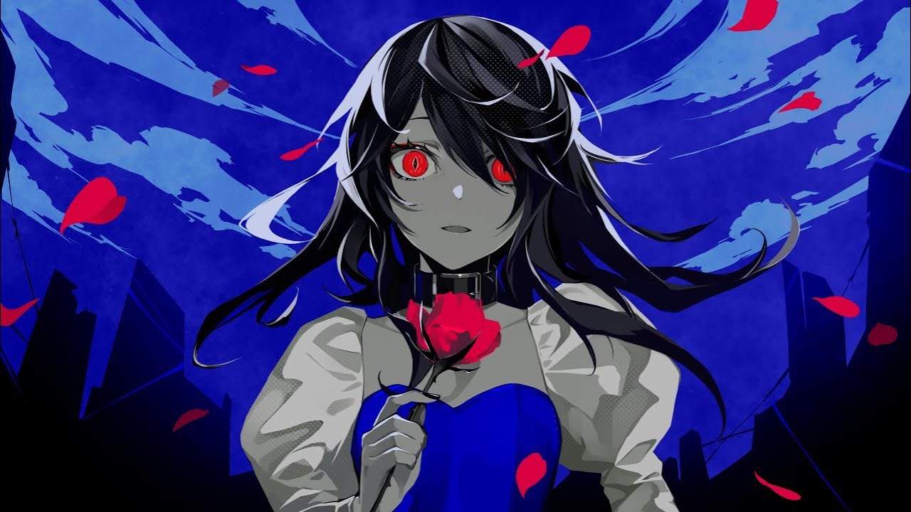
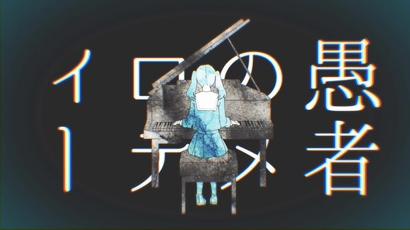

好きなボカロP
画像をクリックすると曲に飛べます！（下のリンクは各ボカロPのチャンネルです）
私は一度ハマると飽きるまでリピート再生しているタイプです。
Kanaria

Kanariaさんの楽曲は曲調がクセになるのが多くて気づいたらリピってます。
DECO*27

言葉選びがとても上手で、一度聴いたら忘れられないキャッチーなフレーズをたくさん生み出しています。
mothy

緻密な世界観と壮大なストーリーで曲を聴くだけでなく、謎解きや考察を楽しめるところが大きな魅力です。